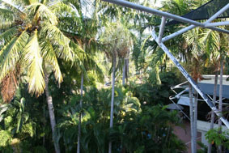
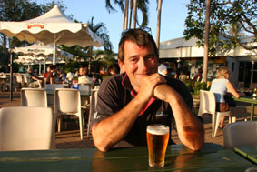
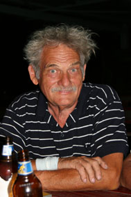
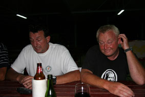
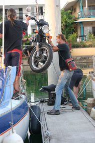
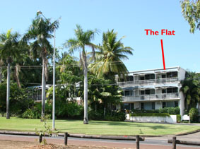

|
|
|
|
|
Darwin I
Sunday, 2nd September – 06.00
Greetings all,
Once again, the more astute among you should now be saying “Hang on! This email’s STILL being written from Darwin – shouldn’t they be in Indonesia by now?”
And, once again, you would be right, but sadly there is now no chance that we’ll be going anywhere for the next six or seven months at least.
It turns out that I did a really good job on myself. Apparently some 50% of broken ribs do not clearly show up on X-Rays – hmmmm, well, I beat that average – Since I was still in a lot of pain even after a month, we had another set of X-rays done and these showed that in fact there were FIVE broken ribs, not just two as first thought.
And to make things worse, four ribs have “displaced” – this is where the broken ends pull apart and do not go back cleanly end to end, but end up off-set or in my case, with about half an inch sitting of top of each other. But more of this sorry bit of our tale later.
 Our last email found me sitting alone in Darwin since Jean had popped back to Perth to surprise her folks. But you’re never alone for long in Darwin.
A few days after Jean flew out, an old friend from Melbourne flew up. Pommy is one of the chaps who helped me sail Hinewai from Brissie up to Cairns, a very successful business man with hollow legs, about my height and build but whereas my dark hair generally leads to a pretty good tan with no burning, his fair hair is a grand offset for the impressive red Pommy turns when left out too long in the sun.
Pommy flew in at midnight on the Wednesday,
having allowed two days for his business up here and then
planning to play for the weekend. As it turned out, he
managed to wrap work up by lunchtime Thursday so we spent
most of the next three days seeking shade to protect his
delicate skin – and it was pure chance that most of the best
shade was found in bars – although we did a couple of
touristy things like visiting the Darwin Aeronautical
Museum. This is basically an old hanger
with a couple of old intact RAAF cast offs and lots of bits
of Japanese planes shot down during the war 
A lot of the time though was spent at the Club evaluating Pommy’s bespoke prescription for coping with broken ribs – four schooners of Carlton Draft every hour while awake – and these can be taken before, during and after food. While I was sorry to see him go on the Sunday, my liver wasn’t.
But in many ways, it is the people here that are making life bearable at the moment. While the bulk of the cruising yachts are now long gone, every day or so, one or two more cruising yachts arrive, stay a while and depart. We all tend to meet up at the Club – sitting round a few of the tables. There must be a “Cruising” look because almost every time a new boat gets in, they’ll come over and ask “You Cruisers?”
“Yeah – pull up a chair. Just in? From where?”
Conversation then ranges from the usual traveling tales, mutual friends (or ones we’ve yet to meet), places to go (and places not to go). Jean has unintentionally, yet effortlessly, moved into the role of Cruising Earth Mother – since we have been here for a while, we have a good idea of the best places to shop, get spares etc etc – and her local knowledge has been a boon to many.
 And it’s such a diverse bunch. Round the table over the last couple of nights have been Christiaan (“Crispy”), originally Dutch, but who’s been in Oz for 40 of his 74 years and whose silver blond hair and mustache always reminds me of old drawing of Papa G, the carpenter who made Pinocchio. Retired now, he seems to have a few yachts dotted around the country, along with a few properties. Originally, he was also sailing off (by himself) to Indonesia, but had to drive back to Hervey Bay to “sort a couple of things out”. He’s now back but has decided that he’ll sell the yacht he sailed up to Darwin and bring another up next year.
William (always “William” NOT “Bill”) – 5 10,
mid 50’s, short dark hair over an  
The only slight problem might have been that Mike is actually motorcycling around the world and wanted to take his bike with him. No problem, it was simply lifted aboard and lashed down
There are the Namibians – Heiko, Diane and their two sons Stefan & Oliver (who was born in Trinidad after they set off). Probably mid 40’s they both have pepper-pot hair, his obviously cut by her. Her’s now shoulder length and growing out from a crew cut accidentally given somewhere in South America owing to confusion with a barber. He’s another professional diver having mined diamonds off the sea bed of Namibia – they decided to buy the yacht and spend two or three years sailing around the world – and left 10 years ago.
A young English couple from Malmsbury – he just out of the RAF and before he “starts driving buses”, they decided to sail round the world. It turns out they know Mark Jones, an old friend from my Cirencester days 25 years ago (small world). Fiona, a young English/Oz lass (she too has had broken ribs so we sit there and swap pain stories) crewing for a Canadian fellow. There are another few who came in yesterday, but I haven’t got to know them yet.
But whoever they are – I so envy them that they can head off because we are well stuck.
After we’d had the second X-ray done, we went to see the local GP again. He held the film up to the light and just wrote another script for painkillers and said come back in a month. While that’s OK, we thought it might be worth getting some specialist advice and so Jean arranged for me to visit Darwin’s premier sports medicine practice – primarily to get an idea of how quickly we might be able to get away.
We didn’t expect his feedback at all.
The specialist physician was away (he spends a week a month down in Alice Springs/Katherine), but one of the physios checked me and the x-rays out. What he saw worried him enough that they scanned the x-rays and emailed them down to Katherine to be checked by the physician. He got back to us within a couple of hours so we thought it might not be good news.
And it wasn’t. This many broken/displaced ribs are considered to be a “Serious injury”. Indeed, had the first x-rays showed all the damage, it is odds on I would have been admitted to hospital straight away and if the specialist had seen just one more broken rib, he would have had me straight into hospital even after all the time since the accident (a Google on “broken ribs” displaced” was quite scary – there is a 10% mortality rate with five broken ribs).
 His instructions were quite clear – two months rest, doing absolutely nothing that can put any strain on the ribs – this includes climbing ladders which means I can’t even get onto Hinewai. And we can’t even go anywhere – I am not allowed to fly at the moment in case there has been any lung damaged that might be exacerbated by the lower than sea level air pressure in the cabin.
And even after those two months, it will be a “significant” time before I can sail again.
Now quite how long “significant” is, we are not sure, but we accepted we’ll not be going anywhere soon, possibly not until next year’s Darwin-Kupang Rally in July 2008 although hopefully may get a better idea when I see the specialist on 19th October.
The worst thing though is that I’ve gone from a very active lifestyle to a totally sedentary one – and the old weight’s going up a bit.
As you can imagine, this is all a little like belting down the motorway at 100k’s and then accidentally going into reverse. Our plans have pretty much shattered like your gearbox would, dumping oil and broken bits behind you.
Keeping the analogy going, in many ways we’re now coasting to a stop on the hard shoulder – trying to work out what we’re going to do. We have been incredibly lucky that a friend has been happy enough to let us stay in her spare flat (which is so close to the bar at the Darwin Sailing Club that I could probably flick a beer mat onto the balcony) and to use her car – and we are hoping this arrangement will be OK with here until Christmas (which is probably as soon as I can realistically hope to move back onto the boat).
Hinewai herself is still hanging off the hook about half a mile off shore from the Darwin Sailing Club, but it will not be safe for her to be there during “The Wet” – the local’s name for the monsoon season. We’re already starting to feel the weather changing – the humidity is starting to go up and will continue to do so over the next three months. This is known as the “Build-Up” and we are not looking forward to it (although we have been told that your first Build-Up is not too bad since you don’t know how awful it is – the second is the killer because now you know how bad it is). The only up-side is that we’ll start to get the most glorious thunderstorms every evening (all our Aussie friends down south are used to the nation weather forecasts ending for months with “…. And a late storm for Darwin”).
If we are lucky, the monsoonal rains will come in late December – while the humidity is still high, they do apparently make things a little more bearable – if we’re not, it may be as late as mid-January by which time most of Darwin has gone troppo. Mould can be a problem on yachts at this time so we’ll need to look for either an air-conditioner to fit to the yacht or, if that’s too dear, at least a dehumidifier.
And, there’s always the chance of a cyclone – apparently, historically Darwin gets a hit every 10 to 15 years, but apart from being brushed by a couple of cyclones, hasn’t had this direct hit since the Tracey, the big one of 1974. So it’s well overdue.
Anyway, Jean has arranged for Hinewai to move into Tipperary Wharf – one of the three cyclone proof (they think) marinas in Darwin. All we need is for a French cruising yacht to leave so we can take her berth.
Hopefully, this will be in the next week or so and since I can’t help, we have been overwhelmed by the number of people who have offered to help Jean move Hinewai round.
And then, we will need to start looking for work – a year in Darwin would just drive too big a hole in the Cruising Budget without any income. Quite what we’ll do, I’m not sure although we’ve been putting some feelers out and it looks as if there’ll be a few people who could use our skills although it’s doubtful I will be signed off as fit until mid-October at best (Ah, that means I’ll become a kept man).
So I suppose as much as we can, we now have a plan, it for me to rest for a bit and get better, get the “Big Girl” safely into a marina, earn some money, stay on-shore until Christmas after which (hopefully) I’ll be mended enough to move back on-board and wait out The Wet. And, hopefully, I’ll be OK to start sailing again once the Sailing Season starts (April/May-ish).
What we’ll do then, I’m not sure. There are a few options though – we might head off to Indonesia by ourselves as soon as possible, or we might hang around the Top End and spend some time down in the Kimberley’s before joining the 2008 Darwin-Kupang Rally.
Rest assured, we will keep you updated.
Best wishes from us both.
Regards,
Peter
Next Log Page: Darwin 2
|
|
|
|
|
|
|
The Crew The Route The Yacht The Log Guestbook Links Contact Us |
|
|
|
|
|
Home |
|
|
All Original Content of this Web Site Copyright © 2000, 2001, 2002, 2003, 2004, 2005, 2006, 2007, 2008, 2009 Ocean Odyssey Pty Ltd |